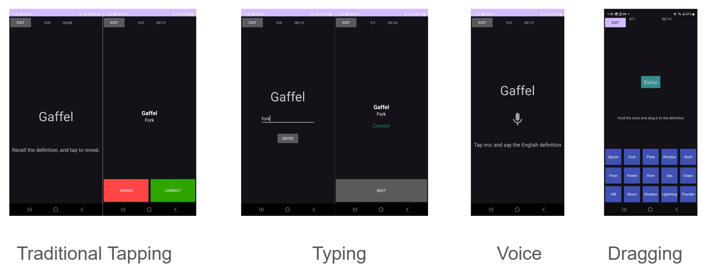
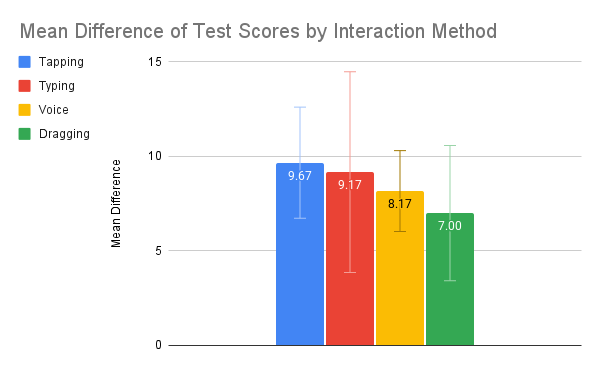

What is GenGO!?
GenGO! is a mobile language learning application built in Android Studio (Java) for my Mobile User Interfaces class at York University.
The name comes from the Japanese word 言語 (Gengo), meaning "language" — and since it's a mobile app, you can do it on the go. Yeah, I was pretty proud of that one.
The app implements a spaced repetition system paired with four distinct interaction methods that users can choose from to study foreign vocabulary.

4 Ways to Study
Each interaction method was designed to test whether different levels of physical engagement with study material affects how well users actually retain it.
Tapping
Users recall the English definition of the displayed word and self-assess their own answer. Minimal friction, maximum focus on the material itself.
Typing
Users type in the English definition of the displayed word. Adds a motor element and enforces spelling accuracy over self-assessment.
Voice
Users speak the English definition out loud. Voice recognition captures and evaluates the response — a hands-free, high-engagement method.
Dragging
Users drag the displayed word to the matching English definition from a set of 15 buckets on screen. The most spatially demanding of all four methods.
The Goal
The overall goal of this project wasn't just to build an app — it was to conduct a research study on mobile UI interactions.
Having just gone through the struggle of learning a new language during my exchange year in Tokyo, I wanted to find the optimal interaction method for language retention.
I designed the study to measure pre-test and post-test scores of participants studying with each method, comparing the score differences across interaction types.
My initial hypothesis: more interactive study methods would yield larger improvements in test scores. Seemed reasonable. Turns out I was wrong.
The Results
Shockingly, the method perceived as "least interactive" (Tapping) resulted in 27.6% higher test scores than the method perceived as "most interactive" (Dragging).
The most likely explanation: with more interactive methods, the user's focus becomes split across multiple cognitive tasks simultaneously.
In the Dragging method specifically, users must read the word, identify the correct bucket from 15 options, execute the drag, and process near-instant feedback — all at once. This cognitive load actively harms memorisation by pulling attention away from the material itself.
The simplest method — just seeing the word and making a judgment call — turns out to be the one that lets the brain focus most purely on the learning itself. Less friction, more retention.

Chart: gengograph.png';" />What's Next?
GenGO! is still a work in progress. The research findings will directly inform further development — for instance, rethinking how the more interactive modes can be redesigned to reduce cognitive overload while preserving engagement.
The dream is to one day release it on the Google Play Store and see it get real traction. For now, the GitHub repo is open if you want to dig into the code.